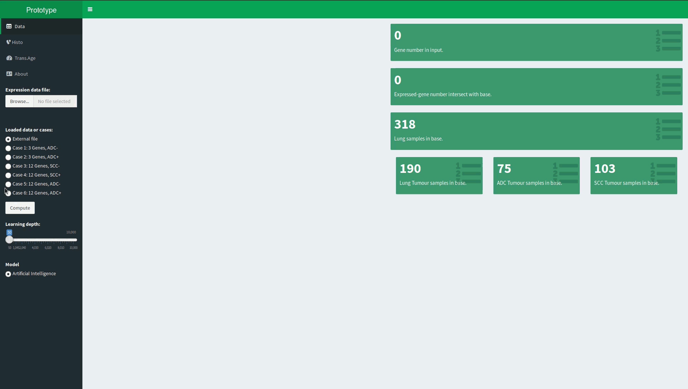
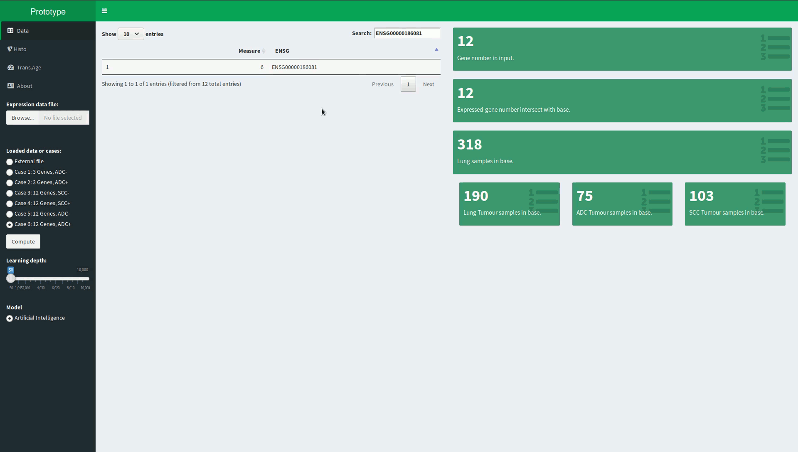
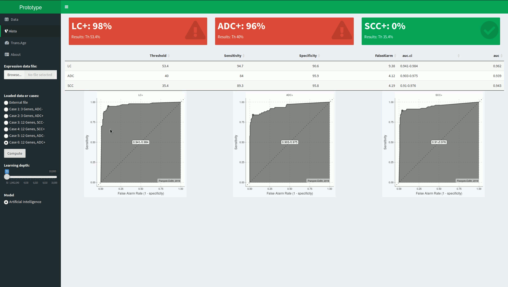
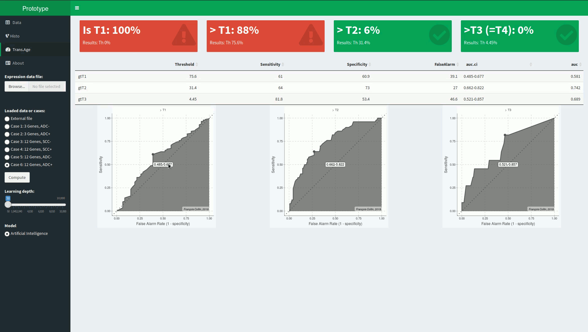

Prototype/Lung Cancer: Multivalent genetic model for clinical decision support
Created by François COLLIN (update 2020-02-12)
Use the Space key to navigate through all slides.
This slide deck is based on reveal.js, an html presentation framework under MIT license, Copyright (C) 2020 Hakim El Hattab, http://hakim.se
The need
In spite of a long run research, the lung cancer condition is characterised by low survival.
Characterisation of the tumour is essential to decide the
treatment offering the best chances
(see here
or there).
Experts are demanding the addition of genetic information to support clinical decision process.
Principle
Following a lung tumour resection, I propose to exploit the
associations between clinical traits and tumour expression
to observe the tumour from a
- Concretely:
- The user provides a lung tumour expression data.
- The user triggers the computation.
- The user gets back clinical information obtained from the genetic standpoint.
The prototype.
Available online
and below.
Data selection: Along with the file input field, a set of use cases.
Application run: The histological types are determined, accuracy estimated.
Transcription age: The association between tumour size and expression is used.
Enhanced learning: If the association is not conclusive, the learning can be enhanced.
Interested?
You are interested by the idea? You want more information? You want me to develop a new idea? Contact me: